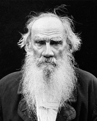

Лев Толстой
Роки життя:1828−1910
Читати:
«Анна Кареніна» (скорочено)
Лев Михайлович Толстой народився 9 вересня1828 р. в Ясній Поляні, поблизу Тули. Мати його, уроджена княжна Марія Миколаївна Волконська . померла. коли хлопчикові не було ще й двох років. а батько. граф Микола Ілліч Толстой. Вихователькою його стала далека родичка Толстих Т.А.Єргольська.
Майже все своє життя Толстой провів у Ясній поляні. яку залишив за 10 днів до своєї смерті. Значно довше, ніж в інших місцях, жив у Москві. У 1844-1847 рр. навчався в Казанському університеті, але курсу не закінчив, тому що університетська наука не задовольняла його. Повернувшись до Ясної Поляни. багато читав, самостійно розширюючи коло знань, піклувався про поліпшення побуту селян.
У травні 1851 р. добровольцем їде на Кавказ, де пробув допочатку1854 р., беручи участь воєнних діях.У цей період було написано повість "Дитинство”, "Отроцтво”, "казаки” та декілька оповідань із військового побуту. Після повернення був відряджений у Дунайську армію, яка билася з турками . а в листопаді 1854 р. його перевили у Крим. Де він узяв участь в обороні Севастополя. Після прибуття до міста письменник захоплено писав братові; "Дух у військах вищий понад усякий опис. У часи Давньої Греції не було стільки геройства. Корнілов, об’їжджаючи війська, замість "Здорово молодці!” ,говорив: "Треба умирати. хлопці. умрете?”, і війська кричали: "Помремо. ваше превосходительство. ура!”. І це був не ефект. бо на обличчі кожного було видно. що не жартують, і вже 22 000 виконали цю обіцянку…”
Сам Толстой під час севастопольської облоги виявив надзвичайну хоробрість. Майже місяць він служив у найнебезпечнішому місці – на четвертому бастіоні. Його враження від цих подій змальовано у трьох оповіданнях: "Севастополь у грудні місяці”(1854), "Севастополь у травні” (1855) і "Севастополь у серпні 1855 року”. Як і в кавказьких нарисах, автор, по суті, першим у світовій літературі правдиво показав війну – "не в правильному, красивому блискучому строю, з музикою і барабанним боєм. Із розгорнутими знаменами і гарцюючими генералами”,а "в справжньому її вияві – у крові, cтражданнях, у смерті”.
Приїхавши до Москви в другій половині листопада 1855 р.,після падіння Севастополя. Толстой уперше потрапив у літературне середовище.Він познайомився з І.Тургенієвим,М.некрасовим,І.гончаровим, О.Писемським,А.Фетом, М.Чернишевським і як письменник, і як людина відчув уважне і навіть захоплення до себе.
Один із його друзів, П.Анненков, писав у кінці листопада 1856 р. І.Тургенєву: "Толстой невпізнанний. і шлях, який він пробіг протягом літа й осені, просто величезний”. В ньому відбувається "великий моральний процес”, - зазначав інший його друг В.Боткін. Сам письменник у щоденнику писав: "Я неймовірно щасливий весь цей час. Тішуся швидкістю морального руху вперед”.Майже за рік(1856-1857) він написав повісті "Юність”, "Два гусари”, "Ранок поміщика” та кілька оповідань.
У кінці листопада 1856 р. Толстой вийшов у відставку, а вже через два місяці вирушив у першу закордонну подорож, яка тривала півроку. Відвідав Францію, Швейцарію, Італію, Німеччину. Він захоплювався прекрасною природою цих країн, проте водночас був вражений надмірним прагматизмом і бездушністю буржуазної цивілізації. У повісті "Із записок князя Д.Нехлюдова. Люцерн” (1857) показав європейське суспільство – безжалісне до людини, глибоко байдуже до мистецтва.
У вересні 1862 р, він одружився з дочкою московського лікаря Софією Андріївною Берс. Ставши сім’янином, багато сил віддавав господарській – діяльності та літературній праці. Сім’я була для нього, з одного боку, душевним притулком, джерелом натхнення, а з іншого – предметом для суперечливих роздумів про кохання, гармонію людських стосунків іпричини духовного роз’єднання. Взаэмини Толстого ыз сымэю, зокрема з точки зору виских моральних принципыв.
У 1863 р. Л.Толстой розпочав роботу над великим романом "Війна і мир”, яка тривала шість років. У цій історичній епопеї він не лише відтворив факти минулого Росії, а й показав дух російського народу, ті можливості, які криються в ньому для суспільного розвитку.
Письменник усе більше замислюється над проблемами шлюбу і сім’ї. Сама навколишня дійсність спонукала його до цього. У січні 1872р. кинулася під поїзд на станції Ясенки Анна Степанівна Пирогова, неофіційна дружина поміщика Бібикова. Сімя Толстих дуже добре знала загиблу жінку, і саме її трагічну долю відображено у романі "Анна Кареніна” (1873-1877) . Пристрасним протестом проти бездуховного суспільства став роман "Воскресіння” (1889-1899), за який автор у 1901 р. був відлучений сином від церкви. Тому кінець його життя затьмарить нерозумінням і сім’ї , і світу. Але він не схиляється перед обставинами. У постійній внутрішній боротьбі із самим собою і суспільством продовжує відгукуватися на все, що хвилює його моральну свідомість і сувору совість ( "Після балу” – 1903. " За що?” – 1906. "Живий труп” - 1900. "Хаджи – Мурат” - 1896 – 1904 та ін.).
Останні роки письменник невтомно працював. Незважаючи на тяжку хворобу, перенесено в 1901 – 1902 рр., він залишався міцним духовно і фізично. Проте дедалі більше його гнітить життя в Ясній Поляні – життя забезпеченої людини серед нужденних селян. Позбавлений душевного спокою, він все частіше замислювався над тим, щоб покинути рідне село. У 1908р. пише у щоденнику: "Все більше і більше хворію своїм достатком і навколишньою нуждою … Безліч народу, всі гарно одягнені, їдять, п’ють, вимагають. Слуги бігають, виконують. А мені все болісніше і болісніше, важче і важче брати участь і не засуджувати”. У 1908 р. відчуття сорому за навколишню дійсність і болісніше непокоять письменника: "Життя тут, у Ясній Поляні, зовсім отруєне. Куди не вийду – сором і страждання… Не можу забути, не бачити”.
Рано – вранці 10 листопада 1910 р. Толстой здійснив свій намір і таємно пішов із Ясної Поляни.